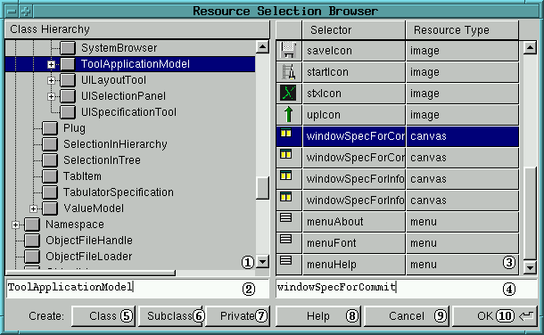

Using the Resource Selection Browser
Index
Introduction
The Resource Selection Browser of ST/X allows you to browse and
select methods containing the following resource specifications:
Functions of the Resource Selection Browser
After startup, a Resource Selection Browser appears as shown in the next figure:

-
Tree list of the system classes
This list shows hierarchically all loaded classes of the smalltalk
system. By the cursor keys you can move down or up; with double-clicking
on classes with a plus signs their subclasses can be listed under that
class. The subclasses can be hidden by a second double-click.
-
Entry field for the name of a class
When a class has been selected this field shows the class name. Besides
that, this field has a special functionality:
You can type in the first known characters of the class you want to
browse to. Then press the tab key. Now, the tool will try to find that
class which name contains these starting string pattern you typed in. This
process can be repeated as long as you find the desired class.
-
Table of the resource methods
This table lists all resource methods implemented in the selected class.
It depends on the instancing call for the Resource Selection Browser which
resource methods are shown, i.e. a filter for the resource types can be
set.
-
Entry field for the name of a selector
When a resource method has been selected, this field shows the name
of the selector of the resource method. If you want to save a resource
specification into a new resource method, you have to type the desired
name of the selector for the resource method into this field.
-
Class Creation Button
By pressing this button you creates a new class with the same superclass
like the selected class.
-
Subclass Creation Button
By pressing this button you creates a new subclass of the selected class.
-
Private Class Creation Button
By pressing this button you creates a new private class of the selected
class. You will be asked for a superclass by a dialog.
All new classes get the same category as the selected class.
-
Help Button
By pressing this button a HTML-browser will be opened on this documentation
file.
-
Cancel Button
By pressing this button the tool will be closed and returns nil.
-
OK Button
By pressing this button the tool will accept the selected resource
method (or the name of the selector, you have typed in before). The tool
returns then a String instance with the following format:
'NameOfTheResourceClass nameOfResourceSelector'
These message strings will be evaluated in the tools using the Resource
Selection Browser in order to load or save resource specifications.
![[stx-logo]](../../../icons/stx.gif)
Copyright © 1998 eXept Software AG, all rights reserved